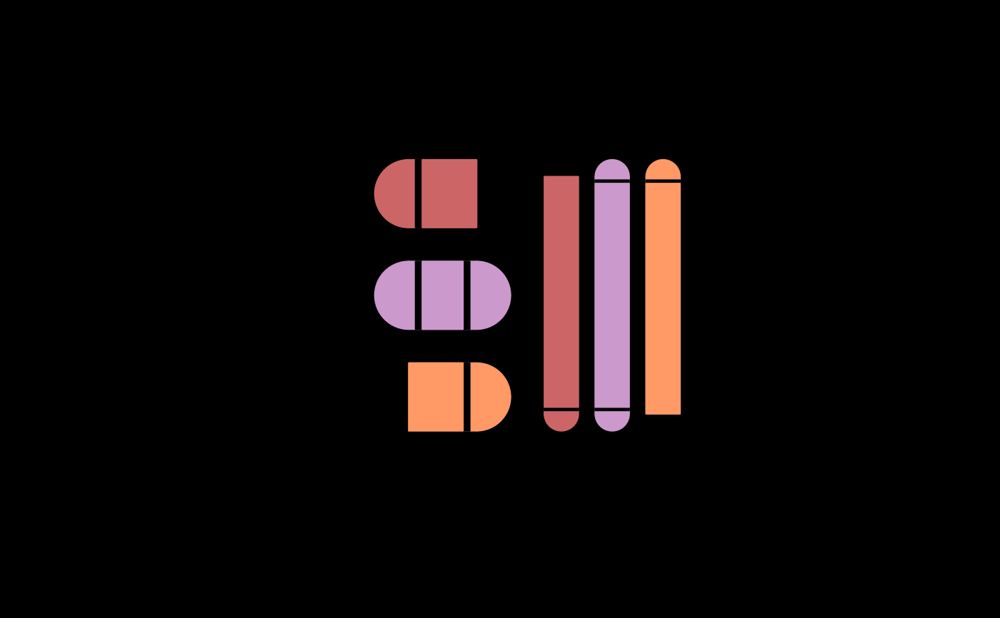

Wrappers around lcars_rect() that add rounded edges on one side or two
opposing sides to make an LCARS pill.
lcars_pill(
xmin,
xmax,
ymin,
ymax,
color = "atomic-tangerine",
direction = c("both", "left", "right"),
vertical = FALSE,
gap = "auto",
n = 50,
asp = 1,
gap_color = "#000000"
)
lcars_half_pill(
x,
y,
r,
direction,
color = "atomic-tangerine",
n = 50,
asp = 1
)
lcars_left_pill(x, y, r, color = "atomic-tangerine", n = 50, asp = 1)
lcars_right_pill(x, y, r, color = "atomic-tangerine", n = 50, asp = 1)
lcars_bottom_pill(x, y, r, color = "atomic-tangerine", n = 50, asp = 1)
lcars_top_pill(x, y, r, color = "atomic-tangerine", n = 50, asp = 1)numeric, scalar left x position.
numeric, scalar right x position.
numeric, scalar bottom y position.
numeric, scalar top y position.
pill color. Can be any color given in hex format. Named colors must be LCARS colors. See lcarsdata for options.
integer 1:4 or character: "topleft", "topright", "bottomleft",
"bottomright". May be abbreviated as "tl", "tr", "br", "bl".
logical, vertical pill.
numeric or "auto", the gap between the pill half circle
edge and pill rectangle edge.
integer, number of points to define rounded edge.
numeric, aspect ratio. This is useful for preventing distortion of pill half circle for plots with different width and height.
the color of gaps if present. This is likely black, but because of the way the pill is drawn, it must be specified to match if the plot background color is not black. Can be any color given in hex format. Named colors must be LCARS colors. See lcarsdata for options.
numeric, x position for edge of horizontal half pill or midpoint of vertical half pill.
numeric, y position for edge of vertical half pill or midpoint of horizontal half pill.
numeric, radius of half pill.
draws to plot
op <- par(bg = "black")
plot(0:1, 0:1, asp = 1)
lcars_pill(0.05, 0.45, 0.7, 0.9, "chestnut-rose", "left")
lcars_pill(0.05, 0.45, 0.4, 0.6, "lilac", "both")
lcars_pill(0.05, 0.45, 0.1, 0.3, "orange-peel", "right")
lcars_pill(0.55, 0.65, 0.1, 0.9, "chestnut-rose", "left", vertical = TRUE)
lcars_pill(0.7, 0.8, 0.1, 0.9, "lilac", "both", vertical = TRUE)
lcars_pill(0.85, 0.95, 0.1, 0.9, "orange-peel", "right", vertical = TRUE)

par(op)